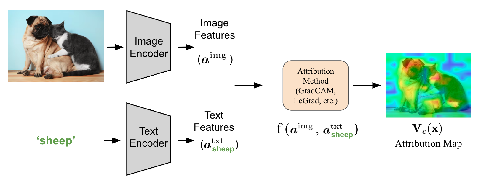
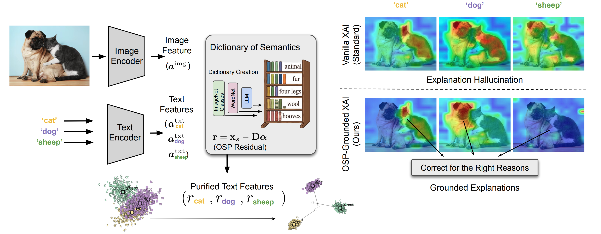
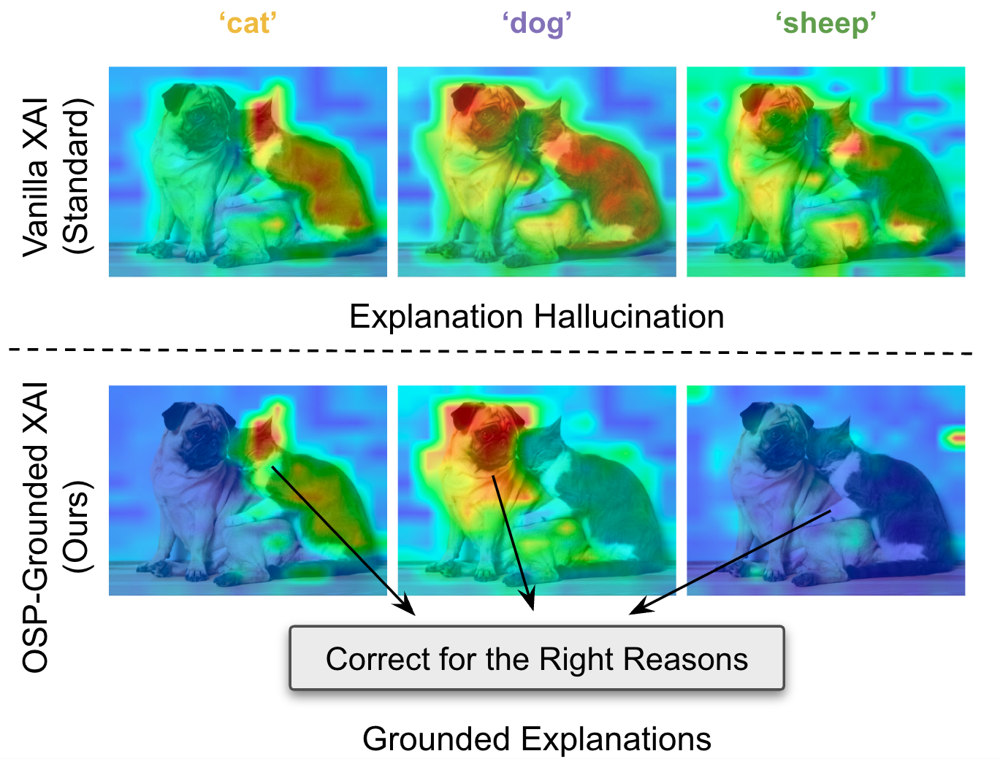

Orthogonal Semantic Projection for Robust Interpretability
1U2IS, ENSTA, Institut Polytechnique de Paris, Palaiseau, France · 2ISIR, Sorbonne Université, Paris, France · 3Imperial College London, United Kingdom · 4AMIAD, Pôle Recherche, Palaiseau, France
Overview of OSP: a geometric intervention in the multimodal embedding space that removes hallucinations from attribution maps.
As Vision-Language Models are increasingly deployed in safety-critical applications, the trustworthiness of their explanations becomes crucial. Explainable AI (XAI) methods for Vision-Language Models often suffer from explanation hallucination, where attribution maps highlight prominent image regions even when prompted with incorrect text descriptions (e.g., highlighting a dog when prompted “cat”). Although this problem is widespread, a formal mathematical analysis of XAI methods and CLIP embeddings is largely missing in the literature. We demonstrate that this phenomenon is not specific to a single architecture but is a fundamental consequence of Linear Semantic Leakage in high-dimensional embedding spaces. We propose a unified theoretical framework, Linear Semantic Attribution (LSA), which generalizes across discriminative methods. We introduce Orthogonal Semantic Projection (OSP), a geometric intervention that utilizes the residual property of Orthogonal Matching Pursuit (OMP) to disentangle unique semantic signals from shared concepts. We prove theoretically and demonstrate empirically that OSP minimizes hallucination by orthogonalizing the query vector against distractor concepts, rendering the attribution model blind to shared features while preserving fidelity for correct prompts.



A training-free module applied directly in the embedding space, before attribution.
Works across CLIP, SigLIP and Stable Diffusion, and 5 attribution methods.
Orthogonality against distractors eliminates hallucinated saliency by construction.
Consistent AUROC gains on ImageNet-Segmentation, backed by a 200-participant user study.
@article{bilgicc2026disentangling,
title={Disentangling Hallucinations: Orthogonal Semantic Projection for Robust Interpretability},
author={Bilgi{\c{c}}, Emirhan and Caramiaux, Baptiste and Yan, Zhi and Franchi, Gianni},
journal={arXiv preprint arXiv:2606.14758},
year={2026}
}